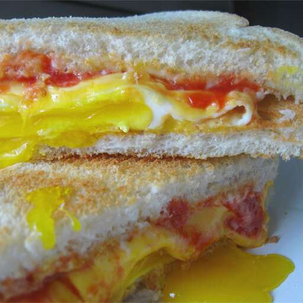

Fried Egg Sandwich
Home

Description
This fried egg sandwich makes great comfort food! You can use any type of bread or cheese that you want for this quick and easy breakfast. Serve with fruit and juice and/or milk for a full breakfast.
Ingredients
- 2 teaspoons butter
- 4 large eggs
- 4 slices processed American cheese
- 8 slices toasted white bread
- salt and pepper to taste
- 2 tablespoons mayonnaise
- 2 tablespoons ketchup
Steps
- Gather the ingredients.
- Melt butter over medium-high heat in a large skillet. Crack eggs into the pan and cook to desired firmness.
- Just before eggs are cooked, place a slice of cheese over each egg; continue to cook until cheese has melted.
- Transfer each egg to a toasted slice of bread. Season eggs with salt and pepper.
- Spread mayonnaise and ketchup on remaining slices of bread and cover eggs with bread to make 4 sandwiches. Serve warm.